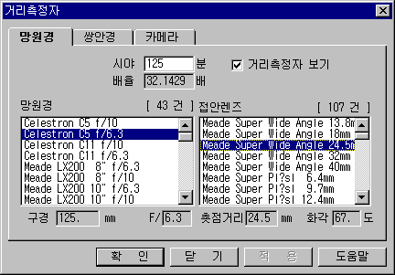

망원경과 쌍안경의 시야는 둥근 원으로 나타나며 카메라의 시야는 사각으로 나타난다. 별바라기에서는 시야를 쉽게 확인할 수 있도록 시야에 해당하는 영역에 하얀색의 거리측정자를 표시해 준다. 거리측정자를 이용하면 망원경 또는 쌍안경을 통하여 보여지는 영역을 성도에서 쉽게 확인할 수 있고, 사각으로 표시되는 카메라 거리측정자를 이용하면 사진 촬영 시 촬영 범위를 미리 확인할 수 있다.
망원경/카메라의 시야 확인 윈도는 망원경, 쌍안경, 필름카메라, 디지털카메라 4개의 작은 윈도로 구성되어 있다. 망원경과 접안렌즈의 조합, 카메라와 렌즈의 조합에 따른 시야는 자동으로 계산되며, 필요시 거리측정자의 크기를 임의로 지정할 수도 있다. 거리측정자는 디폴트로 120분의 원으로 표시된다. 거리측정자를 화면에 표시하지 않을 때는 망원경 윈도의 '거리측정자 보기' 체크박스를 선택하지 않은 상태에서 확인 버튼을 누른다.
망원경 윈도에서 망원경과 접안렌즈 목록을 선택하면 선택된 조합의 배율 및 시야를 자동으로 계산하여 준다. 여기서 시야 크기는 망원경, 접안렌즈와 무관하게 사용자가 원하는 값으로 바꿀 수도 있다. 참고로 망원경의 시야와 배율을 구하는 공식은 다음과 같다.
|
 |
| 거리측정자 윈도 |
망원경 목록에 나타나는 자료는 Data/Telescope.dat 파일에 저장된다. 이 파일을 변경하면 망원경 목록의 내용도 변경된다. 망원경 목록이 너무 많아서 불편함을 느낀다면 Telescope.dat 파일을 다른 이름으로 복사하고 Telescope.dat 파일에서 불필요한 자료를 지우는 것도 좋은 방법이다. 아래는 Telescope.dat 파일 형식을 나타낸다. (구경, F/수, 이름)
2 // 망원경 자료 개수 102 5.4 텔레뷰 제니시스 4" f/5.4 180 14.4 Questar 7" f/14.4
각 항목은 공백문자나 탭문자에 의해 구분되며 이름 항목은 공백문자를 포함할 수도 있다. 구경은 mm 단위로 표현되며 소수도 가능하다. F/수는 소수로 표현 가능하다. 새로운 망원경 자료를 입력할 때는 메모장 등의 프로그램을 이용하여 위의 파일 형식에 맞춰 자료를 입력하고, 자료를 삭제할 때는 한 줄 전체를 삭제한다. 자료의 입력, 삭제시 첫 행의 망원경의 개수를 정확히 입력해야 한다.
접안렌즈 목록에 나타나는 자료는 Data/Eyepiece.dat 파일에 저장된다. 이 파일을 변경하면 접안렌즈 목록의 내용도 변경된다. 접안렌즈 목록이 너무 많아서 불편함을 느낀다면 Eyepiece.dat 파일을 다른 이름으로 복사하고 Eyepiece.dat 파일에서 불필요한 자료를 지우는 것도 좋은 방법이다. 아래는 Eyepiece.dat 파일 형식을 나타낸다. (초점거리, 시야, 이름)
3 // 접안렌즈 자료 개수 6 53 CEP-6, 코스모스 6mm 15 53 CEP-15, 코스모스 Plossl 15mm 25 44 CEP-25, 코스모스 Plossl 25mm
각 항목은 공백문자나 탭문자에 의해 구분되며 이름 항목은 공백문자를 포함할 수도 있다. 초점거리는 mm 단위로 표현되며, 소수도 가능하다. 시야는 도 단위로 표현되며 소수도 가능하다. 새로운 접안렌즈 자료를 입력할 때는 메모장 등의 프로그램을 이용하여 위의 파일 형식에 맞춰 자료를 입력하고, 자료를 삭제할 때는 한 줄 전체를 삭제한다. 자료의 입력, 삭제시 첫 행의 접안렌즈의 개수를 정확히 입력해야 한다.
쌍안경 윈도에서 쌍안경을 선택하면 선택된 쌍안경의 시야, 배율, 구경을 보여준다. 쌍안경 거리측정자는 둥근 원으로 표시된다는 점에서 망원경 거리측정자와 같다.
쌍안경 목록에 나타나는 자료는 Data/Binocular.dat 파일에 저장된다. 이 파일을 변경하면 쌍안경 목록의 내용도 변경된다. 쌍안경 목록이 너무 많아서 불편함을 느낀다면 Binocular.dat 파일을 다른 이름으로 복사하고 Binocular.dat 파일에서 불필요한 자료를 지우는 것도 좋은 방법이다. 아래는 Binocular.dat 파일 형식을 나타낸다. (배율, 구경, 시야, 이름)
2 // 쌍안경 자료 개수 7 50 5.5 7 X 50 5.5도 20 80 3 20 X 80 3도
각 항목은 공백문자나 탭문자에 의해 구분되며 이름 항목은 공백문자를 포함할 수도 있다. 구경은 mm 단위로 표현되며 소수도 가능하다. 시야는 도 단위로 표현되며 소수도 가능하다. 새로운 쌍안경 자료를 입력할 때는 메모장 등의 프로그램을 이용하여 위의 파일 형식에 맞춰 자료를 입력하고, 자료를 삭제할 때는 한 줄 전체를 삭제한다. 자료의 입력, 삭제시 첫 행의 쌍안경의 개수를 정확히 입력해야 한다.
필름카메라 윈도에서 카메라와 렌즈 목록을 선택하면 선택된 조합의 시야를 자동으로 계산하여 준다. 여기서 시야 크기는 카메라, 렌즈와 무관하게 사용자가 원하는 값으로 바꿀 수도 있다. 참고로 카메라의 시야를 구하는 공식은 다음과 같다.
카메라 목록에 나타나는 자료는 Data/camerabody.dat 파일에 저장된다. 이 파일을 변경하면 카메라 목록의 내용도 변경된다. 아래는 camerabody.dat 파일 형식을 나타낸다. (필름 가로, 세로, 이름)
3 // 카메라 자료 개수 36 24 135밀 카메라 60 45 6 X 4.5 카메라 60 60 6 X 6 : 하셀브라드
각 항목은 공백문자나 탭문자에 의해 구분되며 이름 항목은 공백문자를 포함할 수도 있다. 필름크기는 mm 단위로 표현된다. 새로운 카메라 자료를 입력할 때는 메모장 등의 프로그램을 이용하여 위의 파일 형식에 맞춰 자료를 입력하고, 자료를 삭제할 때는 한 줄 전체를 삭제한다. 자료의 입력, 삭제시 첫 행의 카메라 자료의 개수를 정확히 입력해야 한다.
렌즈 목록에 나타나는 자료는 Data/cameralens.dat 파일에 저장된다. 이 파일을 변경하면 렌즈 목록의 내용도 변경된다. 렌즈 목록이 너무 많아서 불편함을 느낀다면 cameralens.dat 파일을 다른 이름으로 복사하고 cameralens.dat 파일에서 불필요한 자료를 지우는 것도 좋은 방법이다. 아래는 cameralens.dat 파일 형식을 나타낸다. (초점거리, 이름)
3 // 카메라 렌즈 자료 개수 21 21mm 35 35mm 50 50mm
각 항목은 공백문자나 탭문자에 의해 구분되며 이름 항목은 공백문자를 포함할 수도 있다. 초점거리는 mm 단위로 표현된다. 새로운 렌즈 자료를 입력할 때는 메모장 등의 프로그램을 이용하여 위의 파일 형식에 맞춰 자료를 입력하고, 자료를 삭제할 때는 한 줄 전체를 삭제한다. 자료의 입력, 삭제시 첫 행의 카메라 렌즈의 개수를 정확히 입력해야 한다.
디지털카메라 윈도에서 카메라와 렌즈 목록을 선택하면 선택된 조합의 시야를 자동으로 계산하여 준다. 여기서 시야 크기는 카메라, 렌즈와 무관하게 사용자가 원하는 값으로 바꿀 수도 있다. 참고로 카메라의 시야를 구하는 공식은 다음과 같다.
카메라 목록에 나타나는 자료는 Data/FOV_DigitalCameraBody.txt 파일에 저장된다. 이 파일을 변경하면 카메라 목록의 내용도 변경된다. 아래는 FOV_DigitalCameraBody.txt 파일 형식을 나타낸다.
# ------------------------------------------- # 이미지센서 가로(mm) 세로(mm) 이름 # ------------------------------------------- 39 51 Kodak KAF 39000 sensor 36 24 Full Frame 28.7 19 APS-H (캐논)
각 항목은 공백문자나 탭문자에 의해 구분되며 이름 항목은 공백문자를 포함할 수도 있다. 이미지센서 크기는 mm 단위로 표현된다. 새로운 카메라 자료를 입력할 때는 메모장 등의 프로그램을 이용하여 위의 파일 형식에 맞춰 자료를 입력하고, 자료를 삭제할 때는 한 줄 전체를 삭제한다.
디지털카메라의 렌즈 목록은 필름카메라와 같은 Data/cameralens.dat 파일을 사용한다. 자료 입력 방법은 위의 '카메라 렌즈 자료 입력'을 참조하시오.
별바라기 홈 최초 작성: 2026년 11월 01일, 최종 변경: 2026년 11월 01일